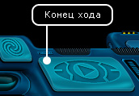
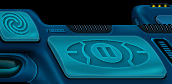

Руководство рейнджера > Панель
навигации > Конец хода (Space)
|
Руководство рейнджера > Панель
навигации > Конец хода (Space)
|
| Конец хода (Space)  "Конец хода" - это самая главная кнопка в игре. Ее нажатие приводит к выполнению вашим кораблем и всеми остальными кораблями отданных ранее приказов ("полет", "посадка", "стрельба из орудий" и т.п.). При этом может пройти как один, так и несколько игровых дней (туров) - в зависимости от отданного приказа. Например, если игрок наметил многодневный перелет, то однократное нажатие кнопки "Конец хода" приведет к выполнению полета в течение нескольких последующих туров, если только игровые события или сам игрок не прервут полет.Конец хода можно активировать в режиме космоса более удобным способом: найдите визуально место, куда вы хотите переместить свой корабль, и дважды кликните там. |
|
 Чтобы прервать выполнение многодневного полета:Нажмите кнопку "Конец хода" или клавишу Space повторно. Если вы находитесь в космосе, остановка корабля произойдет не мгновенно, а по окончании текущего дня. |
| Чтобы осуществить многодневный перелет
с остановкой в конце каждого дня:
При нажатии кнопки "Конец хода" (Space) держите нажатой клавишу Shift. Примечание. Находясь на планете, нажимайте кнопку "Конец хода" только если ждете изменения цен в торговом центре или выдачи правительственного задания. |